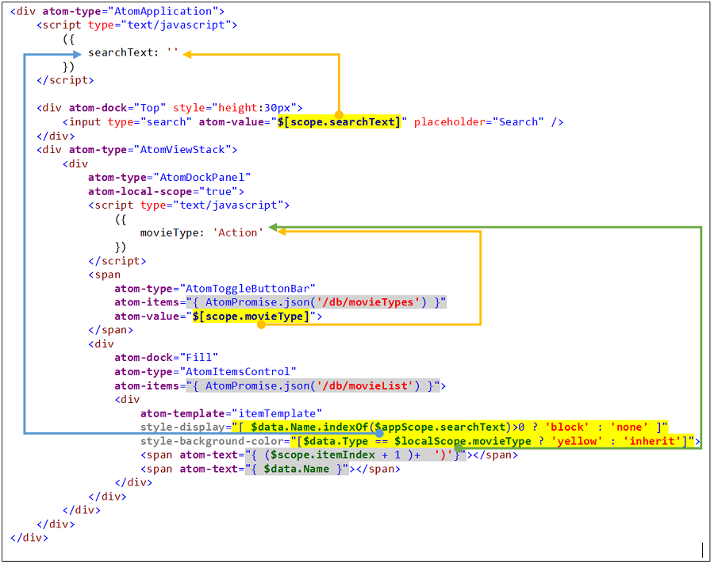

In languages like Flex and Silverlight, ability to create User Controls provided isolation for component authors to avoid naming conflict. However, HTML does not have any naming scope related to HTML Element. Function level private scope is only applicable in scripting context which is independent of visual hierarchy of HTML Elements.
In order to reduce naming conflict, and to provide private data store, Atoms.js provides Local Scope for Atom Controls. By marking AtomControl with atom-local-scope=true attribute, every child element and child AtomControl becomes part of private local scope created at this element. Control and its descendents can communicate with each other via localScope. Following example illustrates how two different control on same page, with same named scope items are isolated for their execution.
Following example illustrates chain of scopes, you can access different items at different scopes.
